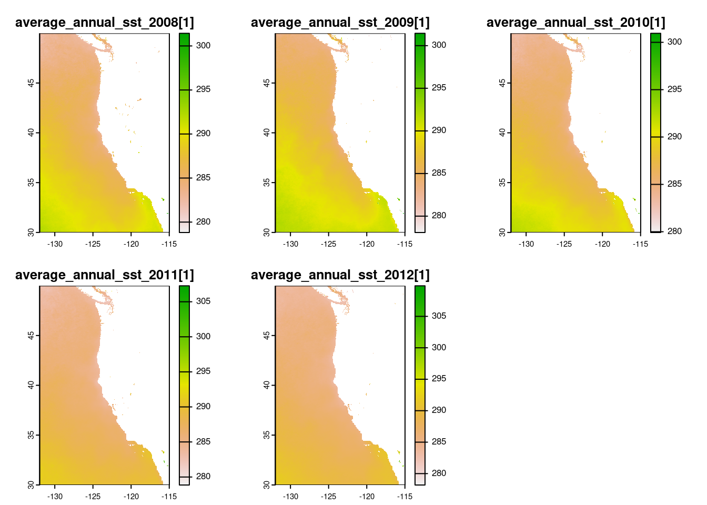
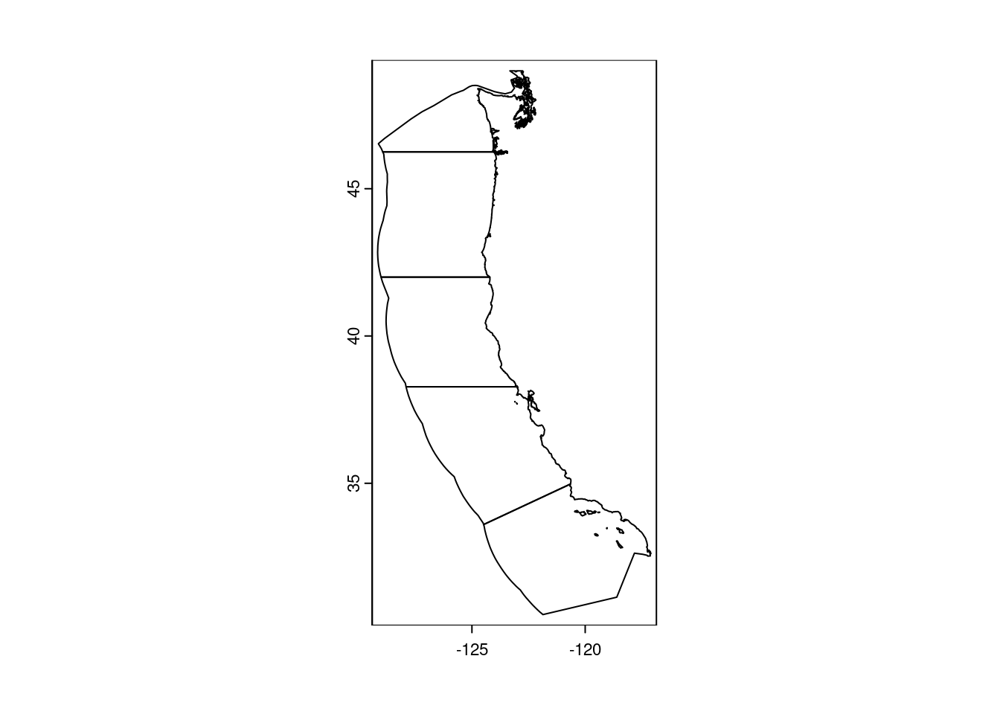
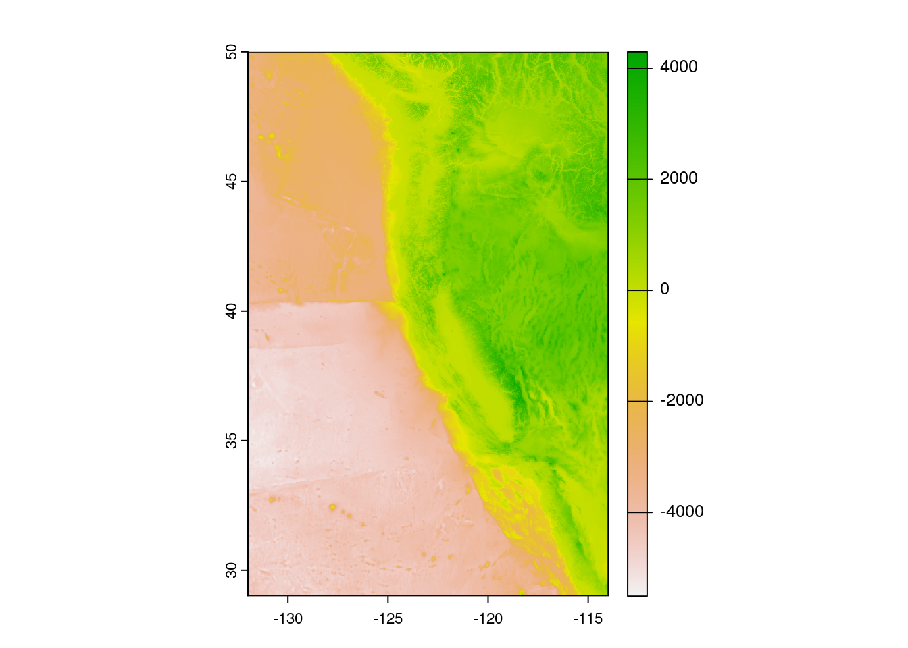
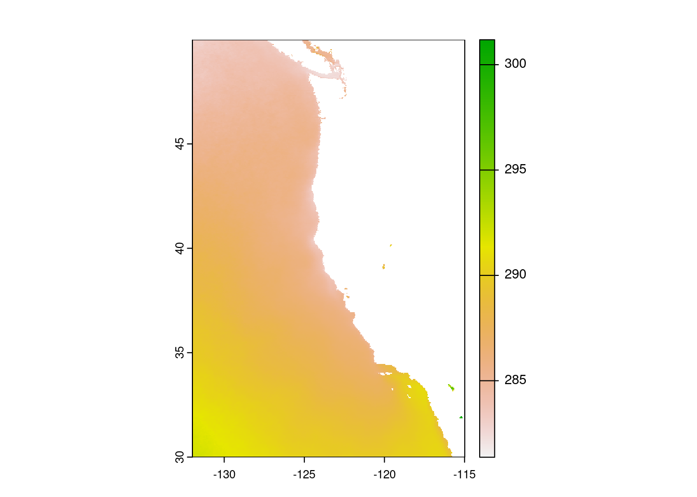
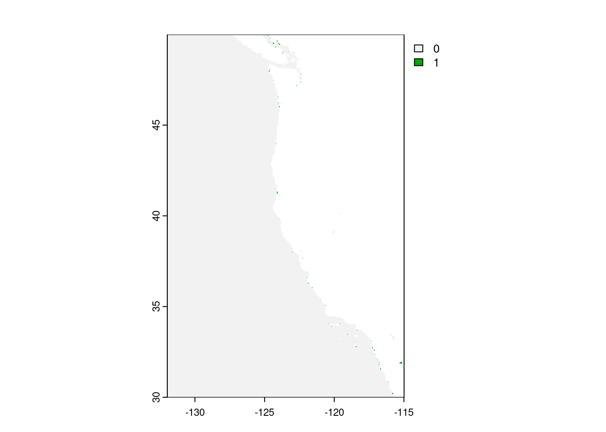
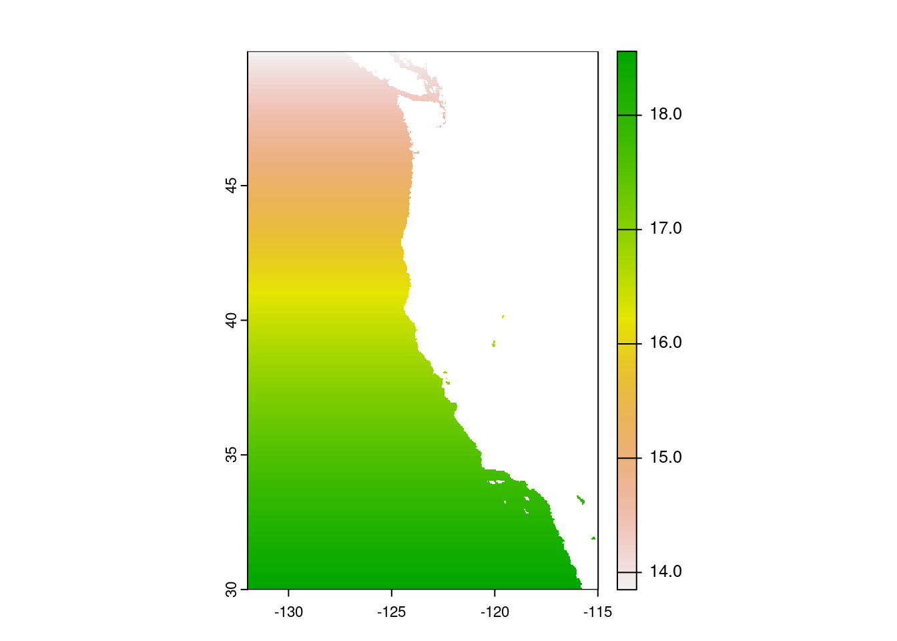

# Load Packages
library(tidyverse)
library(stars)
library(tmap)
library(sf)
library(here)
library(terra)
library(kableExtra)Homework 4, Prioritizing Potential Aquaculture
Link to Homework 4 Description: https://eds-223-geospatial.github.io/assignments/HW4.html
Species of choice- Common cuttlefish (Sepia officinalis) https://www.sealifebase.ca/summary/Sepia-officinalis.html
Prepare Data
# Read in shapefile for the West Coast EEZ
wc_regions <- vect(here("data", "wc_regions_clean[1].shp"))%>%
terra::project("EPSG:4326")# Read in bathymetry raster
depth <- terra::rast(here("data", "depth[1].tif"))%>%
terra::project("EPSG:4326")# Read in SST rasters
# Create list of all SST .tif files
sst_path = here("data")
sst_files <- list.files(sst_path,
pattern = glob2rx("*average_annual_sst_*.tif$"),
full.names = TRUE)
# Create a raster stack
sst <- terra::rast(sst_files)%>%
terra::project("EPSG:4326")# Check CRS' and transform to match
print(st_crs(depth))Coordinate Reference System:
User input: WGS 84
wkt:
GEOGCRS["WGS 84",
ENSEMBLE["World Geodetic System 1984 ensemble",
MEMBER["World Geodetic System 1984 (Transit)"],
MEMBER["World Geodetic System 1984 (G730)"],
MEMBER["World Geodetic System 1984 (G873)"],
MEMBER["World Geodetic System 1984 (G1150)"],
MEMBER["World Geodetic System 1984 (G1674)"],
MEMBER["World Geodetic System 1984 (G1762)"],
MEMBER["World Geodetic System 1984 (G2139)"],
ELLIPSOID["WGS 84",6378137,298.257223563,
LENGTHUNIT["metre",1]],
ENSEMBLEACCURACY[2.0]],
PRIMEM["Greenwich",0,
ANGLEUNIT["degree",0.0174532925199433]],
CS[ellipsoidal,2],
AXIS["geodetic latitude (Lat)",north,
ORDER[1],
ANGLEUNIT["degree",0.0174532925199433]],
AXIS["geodetic longitude (Lon)",east,
ORDER[2],
ANGLEUNIT["degree",0.0174532925199433]],
USAGE[
SCOPE["Horizontal component of 3D system."],
AREA["World."],
BBOX[-90,-180,90,180]],
ID["EPSG",4326]]print(st_crs(wc_regions))Coordinate Reference System:
User input: WGS 84
wkt:
GEOGCRS["WGS 84",
ENSEMBLE["World Geodetic System 1984 ensemble",
MEMBER["World Geodetic System 1984 (Transit)"],
MEMBER["World Geodetic System 1984 (G730)"],
MEMBER["World Geodetic System 1984 (G873)"],
MEMBER["World Geodetic System 1984 (G1150)"],
MEMBER["World Geodetic System 1984 (G1674)"],
MEMBER["World Geodetic System 1984 (G1762)"],
MEMBER["World Geodetic System 1984 (G2139)"],
ELLIPSOID["WGS 84",6378137,298.257223563,
LENGTHUNIT["metre",1]],
ENSEMBLEACCURACY[2.0]],
PRIMEM["Greenwich",0,
ANGLEUNIT["degree",0.0174532925199433]],
CS[ellipsoidal,2],
AXIS["geodetic latitude (Lat)",north,
ORDER[1],
ANGLEUNIT["degree",0.0174532925199433]],
AXIS["geodetic longitude (Lon)",east,
ORDER[2],
ANGLEUNIT["degree",0.0174532925199433]],
USAGE[
SCOPE["Horizontal component of 3D system."],
AREA["World."],
BBOX[-90,-180,90,180]],
ID["EPSG",4326]]print(st_crs(sst))Coordinate Reference System:
User input: WGS 84
wkt:
GEOGCRS["WGS 84",
ENSEMBLE["World Geodetic System 1984 ensemble",
MEMBER["World Geodetic System 1984 (Transit)"],
MEMBER["World Geodetic System 1984 (G730)"],
MEMBER["World Geodetic System 1984 (G873)"],
MEMBER["World Geodetic System 1984 (G1150)"],
MEMBER["World Geodetic System 1984 (G1674)"],
MEMBER["World Geodetic System 1984 (G1762)"],
MEMBER["World Geodetic System 1984 (G2139)"],
ELLIPSOID["WGS 84",6378137,298.257223563,
LENGTHUNIT["metre",1]],
ENSEMBLEACCURACY[2.0]],
PRIMEM["Greenwich",0,
ANGLEUNIT["degree",0.0174532925199433]],
CS[ellipsoidal,2],
AXIS["geodetic latitude (Lat)",north,
ORDER[1],
ANGLEUNIT["degree",0.0174532925199433]],
AXIS["geodetic longitude (Lon)",east,
ORDER[2],
ANGLEUNIT["degree",0.0174532925199433]],
USAGE[
SCOPE["Horizontal component of 3D system."],
AREA["World."],
BBOX[-90,-180,90,180]],
ID["EPSG",4326]]Process data
# View rasters to see what we are working with
plot(sst)
plot(wc_regions)
plot(depth)
# Find the mean SST from 2008-2012 (e.g. create single raster of average SST)
avg_sst <- mean(sst)
# Plot to check
plot(avg_sst)
# Convert average SST from Kelvin to Celsius (hint: subtract by 273.15)
avg_sst_c <- avg_sst - 273.15
# Verify update
avg_sst_cclass : SpatRaster
dimensions : 480, 408, 1 (nrow, ncol, nlyr)
resolution : 0.04165905, 0.04165905 (x, y)
extent : -131.9848, -114.9879, 29.99208, 49.98842 (xmin, xmax, ymin, ymax)
coord. ref. : lon/lat WGS 84 (EPSG:4326)
source(s) : memory
name : mean
min value : 8.217548
max value : 28.033722 # Crop depth raster to match the extent of the SST raster
depth <- crop(x = depth, y = avg_sst_c)
# View the plot
plot(depth)
# note: the resolutions of the SST and depth data do not match
# Resample the depth data to match the resolution of the SST data using the nearest neighbor approach
depth <- resample(depth,
avg_sst_c,
method = "near")# Check that the depth and SST match in resolution, extent, and coordinate reference system (hint: can the rasters be stacked?)
cat("Do the extents match?",
terra::ext(avg_sst_c) == terra::ext(depth),
"\nDo the resolutions match?",
terra::res(avg_sst_c) == terra::res(depth),
"\n Do the CRS' match?",
terra::crs(avg_sst_c) == terra::crs(depth))Do the extents match? TRUE
Do the resolutions match? TRUE TRUE
Do the CRS' match? TRUEFind suitable locations for Oysters
# reclassify SST and depth data into locations that are suitable for oysters (hint: set suitable values to 1 and unsuitable values to 0)
sst_reclass <- matrix(c(-Inf, 11, 0,
11, 30, 1,
30, Inf, 0),
ncol = 3,
byrow= TRUE)
depth_reclass <- matrix(c(-Inf, 0, 0,
0, 70, 1,
70, Inf, 0),
ncol = 3,
byrow= TRUE)# Apply matrices to reclassify depth and sst rasters for Oyster suitability
optimal_sst <- classify(avg_sst_c,
rcl = sst_reclass)
optimal_depth <- classify(depth,
rcl = depth_reclass)# Find locations that satisfy both SST and depth conditions
# HINT: The SST and depth rasters should now identify the suitability of locations as 0 or 1. To find locations that have both suitable temperature and depth, you can use map algebra. One idea is to multiply the values in each raster cell, using the lapp() function.
optimal_fun <- function(sst, depth) {
sst * depth
}
optimal_locs <- lapp(c(optimal_sst, optimal_depth), fun = optimal_fun)
# Plot optimal locations
plot(optimal_locs)
Determine the most suitable EEZ for Oysters
# Select suitable cells within West Coast EEZs, using `mask()` within cellSize()
optimal_locs_mask <- cellSize(x = optimal_locs, # area of cells
mask = TRUE,
unit = 'km',
transform = TRUE)
# Plot to view the mask
plot(optimal_locs_mask)
# Find the total suitable area within each EEZ (hint: it might be helpful to rasterize the EEZ data)
# Rasterize wc_regions data
eez_raster <- rasterize(x = wc_regions,
y = optimal_locs,
field = 'rgn')
# View raster to confirm change
plot(eez_raster)
# Total suitable area can be found with zonal function from terra.
optimal_locs_mask <- zonal(x = optimal_locs_mask,
z = eez_raster,
fun = "sum",
na.rm = TRUE)# Present outputs in a table
optimal_order <- optimal_locs_mask[order(optimal_locs_mask$area, decreasing = TRUE),]
optimal_order %>%
kable(caption = "Total Suitable Area Within Each EEZ")| rgn | area | |
|---|---|---|
| 4 | Southern California | 205820.30 |
| 1 | Central California | 201496.19 |
| 3 | Oregon | 178650.46 |
| 2 | Northern California | 163008.58 |
| 5 | Washington | 64796.49 |
Visualize our results
# Visualize results